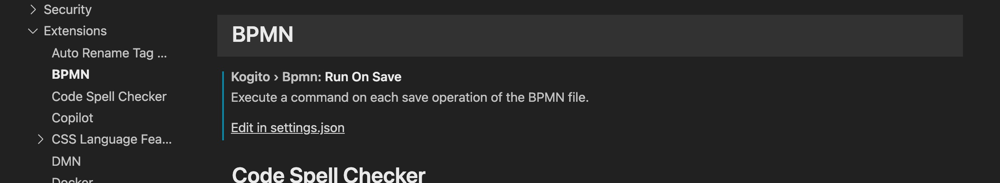
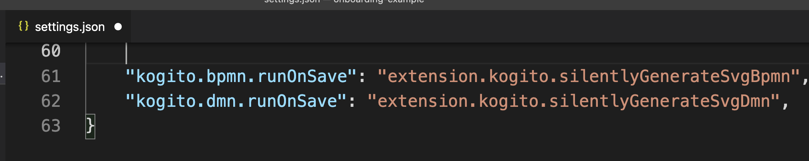

Automatically generate BPMN/DMN SVG on VS Code
To provide better integration with the KIE server and Business Central, on the Kogito Tooling 0.14 release, we introduced a way to, on VS Code, automatically generate SVG on each save of your BPMN and DMN Diagram. Take a look at this feature in action:

How to configure it
To auto-generate on VS Code the SVG on each save of your BPMN and DMN diagrams; you need to add two properties to your user and workspace settings (settings.json, the VS Code configuration file):
"kogito.bpmn.runOnSave": "extension.kogito.silentlyGenerateSvgBpmn",
"kogito.dmn.runOnSave": "extension.kogito.silentlyGenerateSvgDmn",To do that, open your user and workspace settings, use the following VS Code menu command:
- On Windows/Linux – File > Preferences > Settings
- On macOS – Code > Preferences > Settings
From there, access menu Extension > BPMN (or DMN), and click on ‘Edit in settings.json’:

And finally, add the respective properties to the end of this file and save it:

If you need any further questions, please let us know in the comment section!

{kind=link}
{kind=link}